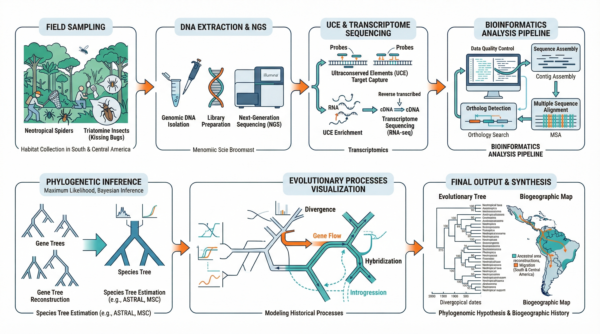
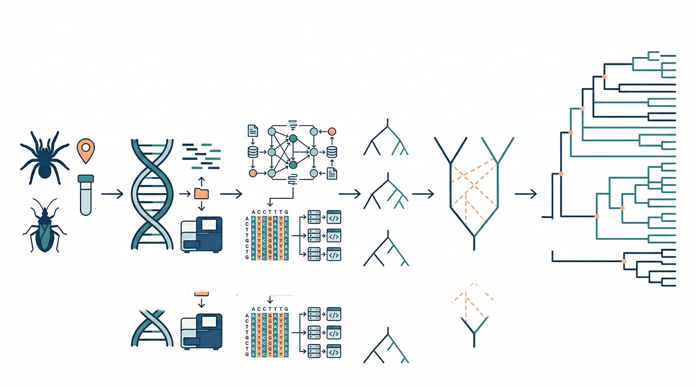

I am a postdoctoral researcher at São Paulo State University (UNESP), working in the fields of evolutionary biology, systematics, and phylogenomics of Neotropical organisms. My research focuses primarily on two ecologically and medically significant groups: the Triatominae (hematophagous insects and vectors of Chagas disease) and the Theraphosidae (tarantulas). ``` Using high-throughput sequencing approaches, my work aims to uncover patterns of diversification, adaptation, and biogeographic history within these lineages. To address these questions, I integrate multiple analytical frameworks, including geometric morphometrics, phylogenetic inference, and comparative genomics. These tools enable the reconstruction of evolutionary relationships and the investigation of morphological and genomic variation across species. More broadly, my research seeks to contribute to a deeper understanding of Neotropical biodiversity and the evolutionary processes shaping it. ```

